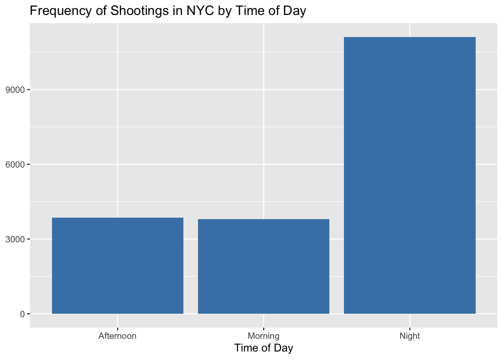
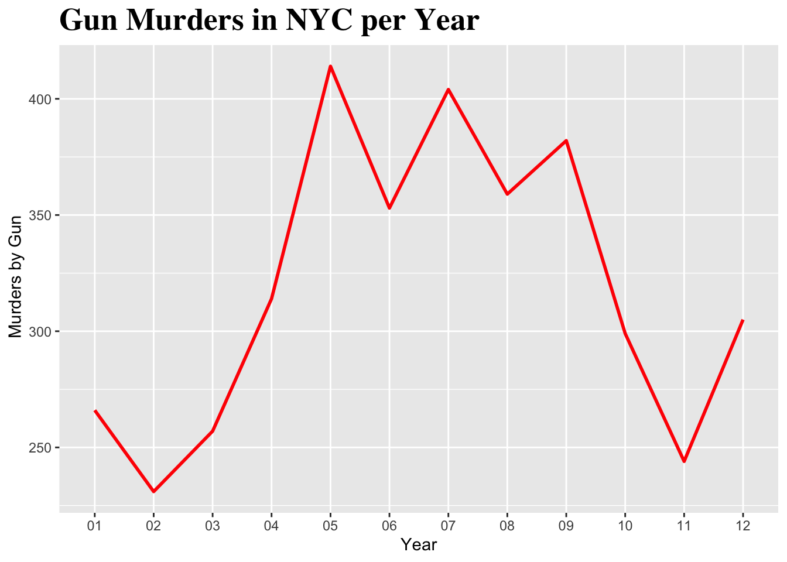

library(tidyverse)
library(lubridate)
library(stringr)
library(tidyr)
library(ggplot2)
library(httr)
library(knitr)
library(readr)Assignment 1 - NYC Shooting Insights
Introduction
I have been tasked with cleaning and analyzing NYC shooting data from the past 19 years. Using Tidyverse, I created insights to understand who the most common perpetrators and victims are, the frequency of and deaths from shootings over the years, as well as table summaries about the shootings.
Loading the Dataset
shooting_data <- read_csv("NYPD_Shooting_Incident_Data__Historic__20250910 (1).csv")shooting_data %>% head(n=5) %>% kable()| INCIDENT_KEY | OCCUR_DATE | OCCUR_TIME | BORO | LOC_OF_OCCUR_DESC | PRECINCT | JURISDICTION_CODE | LOC_CLASSFCTN_DESC | LOCATION_DESC | STATISTICAL_MURDER_FLAG | PERP_AGE_GROUP | PERP_SEX | PERP_RACE | VIC_AGE_GROUP | VIC_SEX | VIC_RACE | X_COORD_CD | Y_COORD_CD | Latitude | Longitude | Lon_Lat |
|---|---|---|---|---|---|---|---|---|---|---|---|---|---|---|---|---|---|---|---|---|
| 231974218 | 08/09/2021 | 01:06:00 | BRONX | NA | 40 | 0 | NA | NA | FALSE | NA | NA | NA | 18-24 | M | BLACK | 1006343.0 | 234270.0 | 40.80967 | -73.92019 | POINT (-73.92019278899994 40.80967347200004) |
| 177934247 | 04/07/2018 | 19:48:00 | BROOKLYN | NA | 79 | 0 | NA | NA | TRUE | 25-44 | M | WHITE HISPANIC | 25-44 | M | BLACK | 1000082.9 | 189064.7 | 40.68561 | -73.94291 | POINT (-73.94291302299996 40.685609672000055) |
| 255028563 | 12/02/2022 | 22:57:00 | BRONX | OUTSIDE | 47 | 0 | STREET | GROCERY/BODEGA | FALSE | (null) | (null) | (null) | 25-44 | M | BLACK | 1020691.0 | 257125.0 | 40.87235 | -73.86823 | POINT (-73.868233 40.872349) |
| 25384540 | 11/19/2006 | 01:50:00 | BROOKLYN | NA | 66 | 0 | NA | PVT HOUSE | TRUE | UNKNOWN | U | UNKNOWN | 18-24 | M | BLACK | 985107.3 | 173349.8 | 40.64249 | -73.99691 | POINT (-73.99691224999998 40.642489932000046) |
| 72616285 | 05/09/2010 | 01:58:00 | BRONX | NA | 46 | 0 | NA | MULTI DWELL - APT BUILD | TRUE | 25-44 | M | BLACK | <18 | F | BLACK | 1009853.5 | 247502.6 | 40.84598 | -73.90746 | POINT (-73.90746098599993 40.84598358900007) |
This code allowed me to upload this dataset from my computer into R. Now, I can start working with it.
NoteChange in Data Source
This assignment was originally created by using an API to pull this public dataset directly from NYCOpenData (https://opendata.cityofnewyork.us/). This dataset has since been removed from their website, and a previously downloaded version of this dataset has been applied to this R script instead.
Data Cleaning
shooting_data_new <- shooting_data %>%
mutate(
PERP_AGE_GROUP = na_if(
PERP_AGE_GROUP, "(null)"
)
)
shooting_data_new <- shooting_data_new %>%
mutate(
LOCATION_DESC= na_if(
LOCATION_DESC, "(null)"
)
)
shooting_data_new <- shooting_data_new %>%
mutate(
PERP_SEX = na_if(
PERP_SEX, "(null)"
)
)
shooting_data_new <- shooting_data_new %>%
mutate(
PERP_RACE = na_if(
PERP_RACE, "(null)"
)
)
sum(is.na(
shooting_data_new$PERP_AGE_GROUP)
)[1] 10972shooting_data_new <- shooting_data_new %>% select(1:16)
shooting_data_2 <- shooting_data_new %>% filter(!is.na(PERP_AGE_GROUP))First, I changed all (null) values and made them NA, that way they can be recognized when removing all rows that had NA values. I removed all NA values from the column perp_age_group in order to filter out rows that we don’t have enough information on.
shooting_data_2 <- shooting_data_2 %>% separate(
col = OCCUR_TIME,
into = c("Hour","Minute","Second"),
sep = ":",
)
shooting_data_2 <- shooting_data_2 %>% mutate(Hour = as.numeric(Hour))
#and now...
shooting_data_2 <- shooting_data_2 %>%
mutate(
time_of_day = case_when(
Hour >= 3 & Hour < 12 ~ "Morning",
Hour >= 12 & Hour < 18 ~ "Afternoon",
Hour >= 18 | Hour < 3 ~ "Night"
)
)
shooting_data_clean <- shooting_data_2 %>% select(1:19)Next, I broke up the occur_time column into Hour, Minute, and Second columns. I used the Hour column to create a time_of_day column that specifies whether the shooting happened in the morning, afternoon, or night.
shooting_data_clean <- shooting_data_clean %>% separate(
col = OCCUR_DATE,
into = c("Year","Month","Day"),
sep = "/",
)
shooting_data_clean$Day <- sub("T.*", "", shooting_data_clean$Day)Finally, I had to break up the occur_date column into Month, Day, and Year columns in order to run some of the insights and graphs that I plan on doing.
Insights
Insight 1
shooting_data_clean %>% count(PERP_SEX) %>% kable()| PERP_SEX | n |
|---|---|
| F | 461 |
| M | 16845 |
| U | 1466 |
This table shows us that almost four times the amount of shootings have been committed by men compared to women.
Insight 2
shooting_data_clean %>% count(PERP_SEX,VIC_SEX) %>% arrange(desc(n)) %>% kable()| PERP_SEX | VIC_SEX | n |
|---|---|---|
| M | M | 15008 |
| M | F | 1830 |
| U | M | 1353 |
| F | M | 380 |
| U | F | 112 |
| F | F | 80 |
| M | U | 7 |
| F | U | 1 |
| U | U | 1 |
In the last 19 years, males have been the most common perpetrators as well as the most common victims. Female perpetrators have shot male victims more than they shot female victims.
Tables and Graphs
Graph 1
shooting_by_time_of_day <- shooting_data_clean %>%
group_by(time_of_day) %>%
dplyr::summarize(total = n())ggplot(shooting_by_time_of_day, aes(x = time_of_day, y = total)) +
geom_bar(stat = 'identity', fill = 'steelblue') +
labs(title = "Frequency of Shootings in NYC by Time of Day",
x = "Time of Day",
y =" Total" +
theme(
plot.title = element_text(size=15, family = "serif", face = "bold")
)
)
This graph shows us that most shootings occur at night.
Table 1
murders_per_year <- shooting_data_clean %>%
filter(STATISTICAL_MURDER_FLAG == TRUE) %>%
group_by(Year)
murders_summary <- murders_per_year %>%
count(Year,STATISTICAL_MURDER_FLAG)
murders_summary <- murders_summary %>% rename(total = n)murders_summary %>% select(1,3) %>% kable(caption = "Gun Murders per Year, NYC: 2006-2024")| Year | total |
|---|---|
| 01 | 266 |
| 02 | 231 |
| 03 | 257 |
| 04 | 314 |
| 05 | 414 |
| 06 | 353 |
| 07 | 404 |
| 08 | 359 |
| 09 | 382 |
| 10 | 299 |
| 11 | 244 |
| 12 | 305 |
Graph 2
ggplot(murders_summary, aes(x = Year, y = total, group = 1))+
geom_line(color = 'red', linewidth = 1) +
labs(title = "Gun Murders in NYC per Year",
x = "Year",
y =" Murders by Gun") +
theme(
plot.title = element_text(size=20, family = "serif", face = "bold")
)
This graph shows us the trend line of how many shootings resulted in murder each year from 2006-2024. There had been a steady decline with a spike in 2020.
The average amount of shootings that result in death in NYC each year is 319 per year.
Reflection
I could see this workflow helping me in my thesis research because it seems to be a good tool for creating a coherent and comprehensive document to look back on and follow. Additionally, it seems easy to share my thought process/analyses with my mentor, and an accessible way for her to collaborate on my code if need be. While I still have to figure out the best way to utilize this kind of workflow, I can definitely see it having benefits to keep everything organized for myself and my data, and for reproducibility purposes.